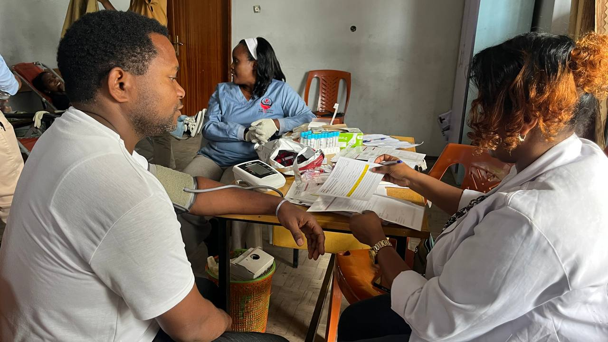
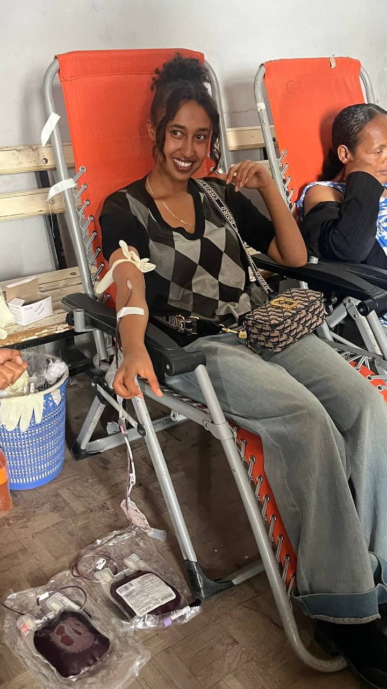

Browse our collection of life-changing messages from the heart of Yerer Full Gospel.
Faith comes by hearing, and hearing by the Word of God — Romans 10:17
This week's message to strengthen your faith
Pastor Yohannes
June 15, 2026
Discover how to live a Spirit-filled life, operate in the gifts, and bear fruit that remains.
Discover the power of a Spirit-led life and how to bear fruit that remains.
Learn the principles of effective prayer that bring breakthrough and transformation.
June 8, 2026
Understanding the promise of the Father and the power of the Holy Spirit.
June 1, 2026

God's heart for those who are hurting and His power to restore and heal.
May 25, 2026
Building unshakable faith in the midst of life's storms and challenges.
May 18, 2026

Entering into God's presence through authentic worship and praise.
May 11, 2026
Explore our themed series for deeper study
The birth of the Church and the power of the Holy Spirit
Understanding the depth and breadth of God's unconditional love
Discover the person and work of the Holy Spirit in your life
Equipping believers for victorious living in Christ
Never miss a message. Listen on your favorite platform.